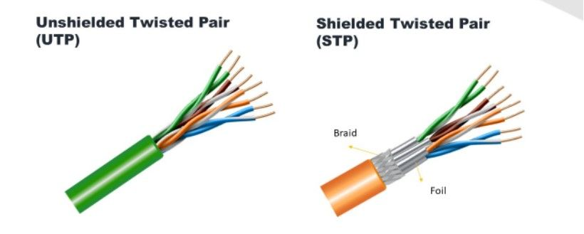

2. Tipos de redes de datos de área local.
2.1 Red cableada.
En una red cableada o por cable, los distintos equipos y dispositivos que se conectan a ella lo hacen a través de cables, que normalmente suelen ser de tipo Ethernet (aunque también pueden ser coaxiales o de fibra óptica). Los principales elementos de una red cableada son los cables y terminales, los switches y hubs (para gestionar los distintos puntos de acceso), los routers y las tarjetas de red de los dispositivos.
Tipos de redes cableadas
Según el tipo de cable que se utiliza en una red cableada podemos encontrar diversos tipos:
Redes de par trenzado
Donde se utilizan este tipo de cables Ethernet que se clasifican en diversas categorías, dependiendo de la velocidad máxima de transferencia y la longitud máxima.

Redes coaxiales
En estas redes se utiliza cable coaxial, aunque están en desuso debido a las mayores prestaciones y rendimientos de los cables Ethernet y de fibra óptica.
Redes de fibra óptica
Este tipo de cable ofrece velocidades de transferencia mucho más altas y son capaces de cubrir una mayor distancia sin pérdida de señal.
Ventajas de las redes cableadas
- Las redes por cable ofrecen muchos beneficios interesantes, entre los que podemos destacar:
- La velocidad de transmisión de datos en este tipo de redes es muy alta, por lo que se consigue el máximo rendimiento a la hora de trabajar en red.
- Al ser necesario utilizar una toma física para acceder a la red, la seguridad es mayor que en las redes inalámbricas, donde el acceso es remoto.
- La estabilidad de la conexión es otro de los puntos fuertes de este tipo de redes (tiempo de latencia mínimo, por ejemplo).
- Facilidad de gestión una vez instalada, teniendo un control preciso sobre todos los equipos y dispositivos que se conectan.
Desventajas de las redes cableadas
Entre las desventajas de las redes cableadas tenemos:
- Su coste de instalación y mantenimiento es elevado debido a la necesidad de realizar una instalación física (cables de red, terminales, tomas de red, switches, patch panel, hubs…).
- Los espacios de trabajo tienen mayor limitación al tener que utilizar un cable para conectarse a la red.
- Mayor dificultad en su instalación inicial debido a la necesidad de cablear todas las tomas y centralizarse en un punto.Añadir nuevos puntos de conexión también es más complejo y costoso en relación con las redes inalámbricas (dificultad para escalar).
2.2 Red inalámbrica.
En una red inalámbrica la conexión y comunicación se realiza de manera remota sin la necesidad de utilizar cables físicos. Se trata de un tipo de red muy interesante porque permite una gran versatilidad a la hora de conectar dispositivos móviles, además de proporcionar espacios más limpios y menor dificultad a la hora de su instalación.
Tipos de redes inalámbricas
Las redes inalámbricas se pueden clasificar en los siguientes tipos:
- Wireless Local Area Network
La red WAN utiliza tecnología wifi para conectar dispositivos dentro de un área limitada, como un comercio o un edificio de oficinas, por ejemplo. - Wireless Personal Area Network
En una red WPAN los dispositivos se conectan dentro de un área muy pequeña a través de tecnologías como Bluetooth o infrarrojo. - Wireless Metropolitan Area Network
Una red WMAN está diseñada para conectar varios puntos dentro de una ciudad o área metropolitana. - Wireless Wide Area Network
En las redes WWAN se cubren grandes áreas, como ciudades o incluso regiones (algunas tecnologías propias de este tipo de redes son LTE y 5G).
Ventajas de las redes inalámbricas
Entre los beneficios más destacados de las redes inalámbricas podemos mencionar:
Facilidad de instalación al transmitir todos los datos de manera inalámbrica, por lo que no es necesario montar una infraestructura física con cables, switches y hubs.
Reducción de costes al no tener que realizar una inversión en cable que, dependiendo del tipo de instalación, puede tener un importe elevado.
Mayor flexibilidad a la hora de conectar a la red dispositivos móviles como tablets, teléfonos móviles, cámaras IP inalámbricas, ordenadores portátiles, etc.
Conseguir un espacio más limpio y libre de obstáculos al evitar cables de conexión a la red.
Desventajas de las inalámbricas
A pesar de todas las ventajas que ofrecen este tipo de redes, también existen una serie de “contras” que es importante conocer:
- Mayores riesgo de seguridad al no necesitar de una conexión física para acceder a la red (tienen una mayor exposición a los ataques externos al utilizar un sistema de acceso remoto).
- Aunque con el avance de la tecnología las redes inalámbricas cada vez son más veloces, en comparación con las redes cableadas, su velocidad de transferencia es inferior.
- La cobertura de este tipo de redes depende de elementos como paredes y otros objetos que puedan impedir el paso de la señal.
- La estabilidad y latencia de la señal no es continua, como sí ocurre en las redes cableadas.